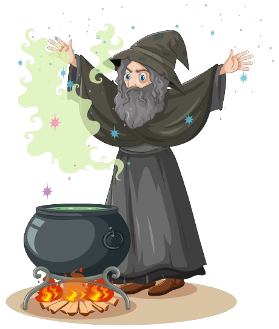

En Make DND
Proporciona a los jugadores una plataforma donde pueden generar escenarios, personajes y tramas para sus aventuras en el juego de rol.
Creamos historias completas para que tengas un sin fin de recursos a los que acudir para implementarlos en tus partidas.
Tenemos partidas que pueden durar días, semanas o meses...o partidas con una duración aproximada de 2 horas.
Puedes elegir la temática y la duración para que nuestro equipo creativo invente por ti. No dudes de que será un acierto seguro contar con nosotros.
